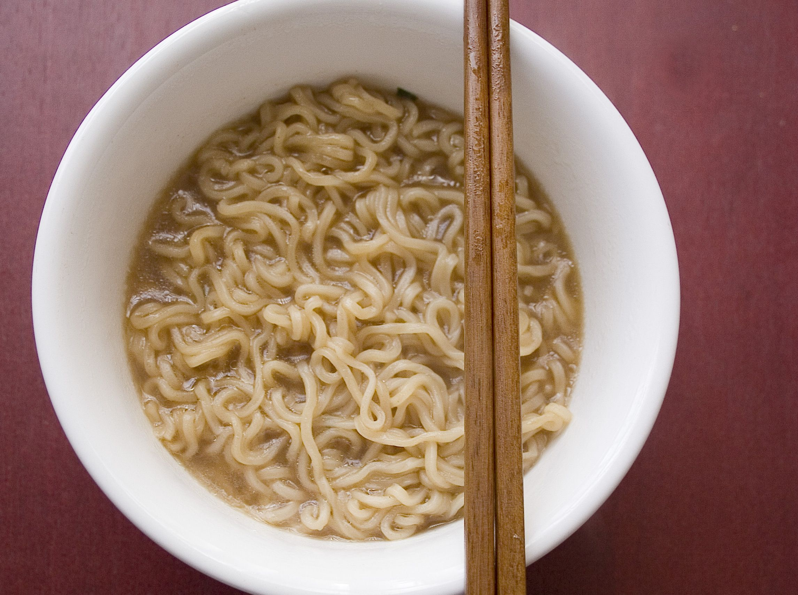

Dorm Room Ramen Noodles

Description
This recipe was made by my mother, a true artisan in the kitchen. She used to serve it to us in weird plates that turned up at the sides, creating a concave surface.
Suitable for any dormitory-dwelling dude (or dudette) who is determined to do diddly-squat in order to dine.
Ingredients
- 1 packet of 23p ramen noodles
- 1 little powder packet that comes with it
- 1 oil pouch thing that sometimes pops out unexpectedly
- 1 cup tap water
- [optional] your choice of vegetables
Steps
- Buy 23p ramen noodles from your local newsagents.
- Go home and open the packet. Pour the contents into a deep plate.
- Before the previous step, put tap water in the kettle and make it boil.
- Eat a few crumbles of the dry ramen.
- Empty some of the hot water into the half-spherical plate containing dry ramen.
- Wait.
- Stop waiting. Empty the sachets of powder and, if you're lucky, the oil into the wet ramen.
- Use any protruding utensil or digit to stir the ramen.
- Add more stuff if you want.
- Serve it in the large cup plate you had already put it in.
All Recipes